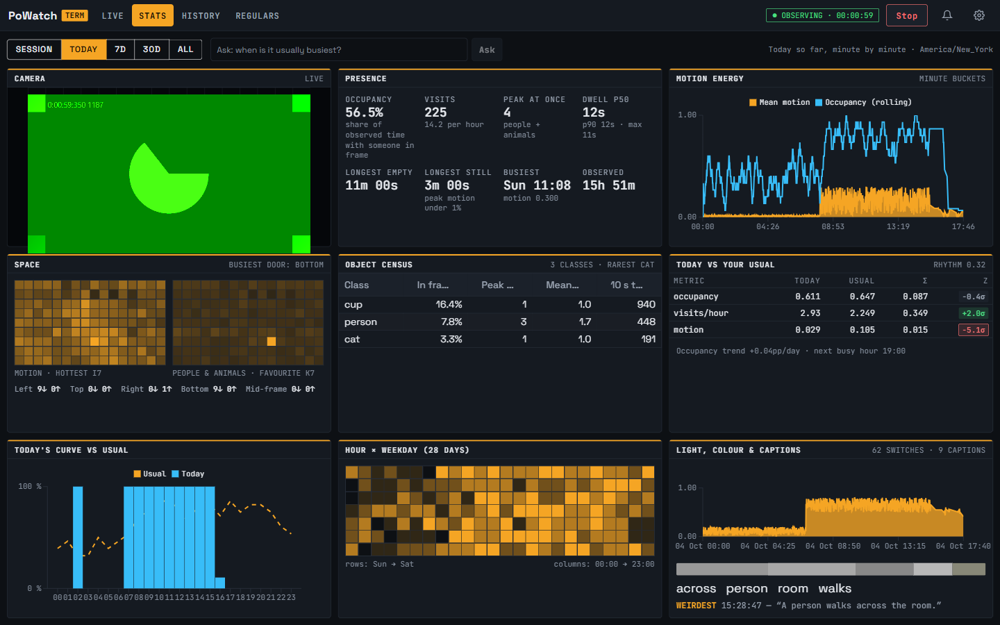
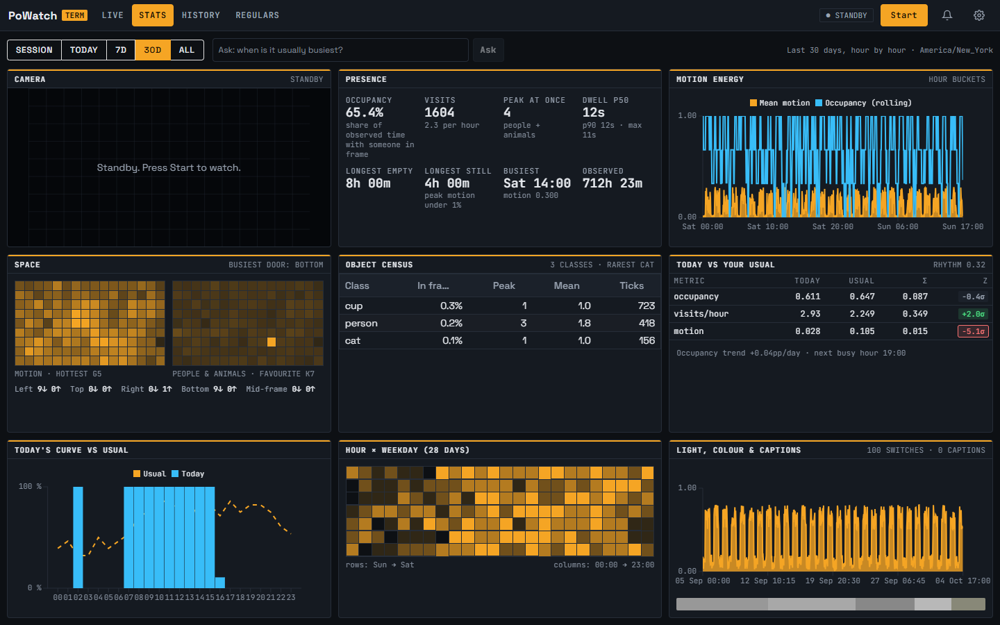
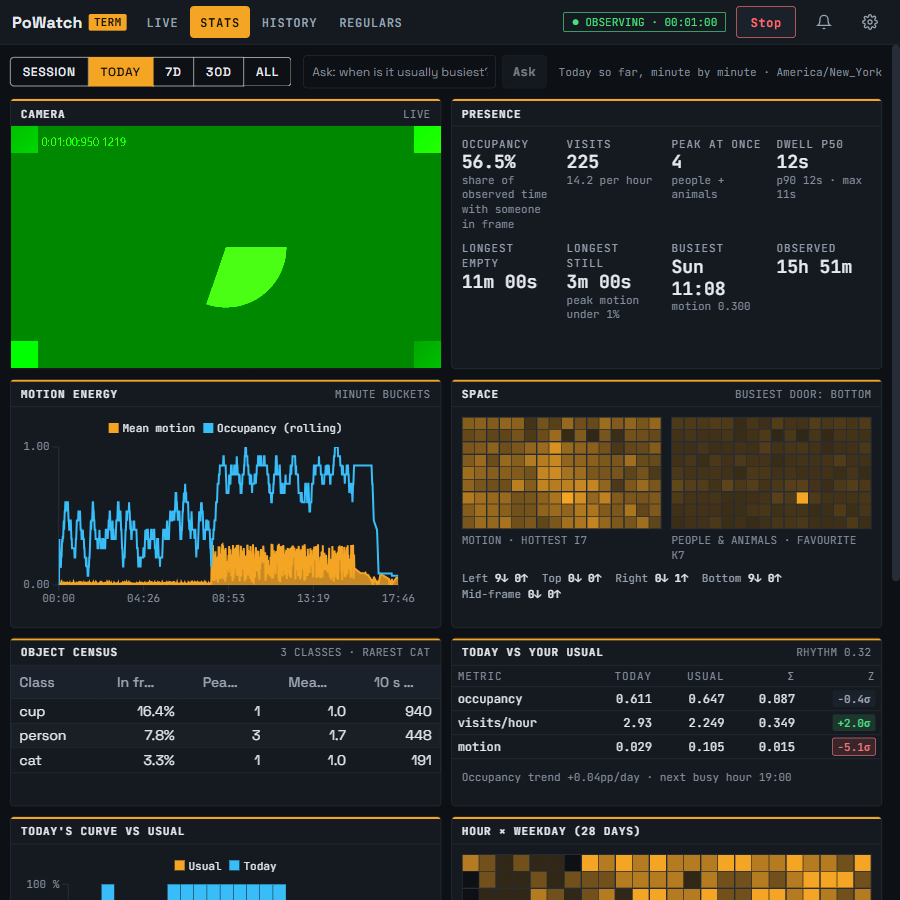

Captured 4 October 2026 from the running Development app (guest, seeded history).
Numbered markers on each screenshot match the notes under it.
what was therewhat changed
After
AFTER · 3×3 with a session running (1440×900, fake test camera)

12345678910
Camera is the first cell. The live feed docks here at 16:9, as it does on Live.
Presence numbers in a 4×2 block.
Motion energy chart flexes to its cell.
Space: both heatmaps side by side, doors as one line under them.
Object census. Column titles were shortened after this shot; see the standby one.
Today vs your usual.
Today’s curve vs usual.
Hour × weekday.
Light, colour and captions in one cell: chart, palette strip, top words, weirdest caption.
Range label moved onto the bar; the whole page fits one screen with no scrolling.
AFTER · standby (range 30D)

1
Standby: the camera cell says so until Start is pressed.
AFTER · narrower window (900 wide)

1
Below 1100 px the grid drops to two columns (one on a phone) and the page scrolls.
Before
BEFORE · one long page, no camera
1234
Twelve panels stacked down a page about two screens tall.
Three space panels: two heatmaps and a doors table.
Three environment panels: light, palette, captions.
 1234
1234